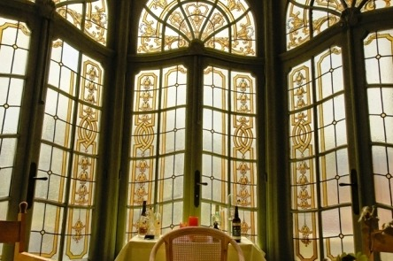
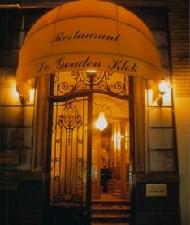
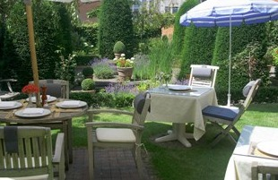

Marino Raffaele
Al meer dan 30 jaar, sinds 1985, zorgen wij voor een hartelijke ontvangst van al onze gasten.
- Lid van de Orde der 33 Meesterkoks van België
- Compagnon de la Toque Blanche, Patrons Cuisiniers
- Ridder van de erewacht van de stad Keulen
- Dé specialist van eend op de wijze van de Tour d'Argent te Parijs
“Diegene die het restaurant gecreëerd heeft kan niet anders dan een geniaal man en een diepzinnig observator geweest zijn.”
Jean Anthelme Brillat-Savarin (1755 - 1826)
À la carte
Menu
Voorgerechten
- Pastei van ganzenlever met oude port
- Gemarineerde zeebaars
- Roerei op 3 verschillende wijzen
- Lauwe salade van langoestines en kalfszwezerik
- Gepocheerde mousse van snoekbaars met kreeftensaus
- Mousseline 'Omble Chevalier' (forel) met champagne
- Gegratineerde Zeelandse oesters met champagne
- Lauwe salade van kreeft
Kreeftbereidingen
- Gegrilde kreeft met botersaus en verse pasta
- Versneden kreeft op een bedje van groenten
- Heldere soep van kreeft met verse kruiden
- Gebakken kreeft met currysaus
- Stoofpotje van kreeft
Zalmbereidingen
- Huisgerookte Schotse zalm
- Tartaar van zalm
- Gestoomde zalmmoot met zurkel
- Gebakken zalm met Bordelaisesaus
- Zalmtournedos met gestoomde groenten
- Salade van rauwe zalm
- Zalm en asperges in blanke botersaus
- Soufflé van zalm
- In de oven gebakken zalmmoot in korst
Visgerechten
- Gepocheerde zeebaars met kreeftensaus
- Tarbot bereid met Gentse mosterd
- Tarbot in een netje met verse tuinkruiden
- Tongrolletjes met kreeftensaus
- Rogfilet met kappers
- Gegrilde sint-pietersvis met choronsaus
- Zeeduivel met ratatouille
- Zeeduivel op een bedje van gestoofde groenten
- Gegrilde zeeduivel met witloof en truffelolie
Vleesgerechten
- Combinatie van kalfszwezerik en kreeft
- Krokant gebakken lamsbout met verse kruiden
- Lamsbout bereid op de wijze van de chef
- Filet van rund met Bordelaisesaus
- Kalfsniertjes bereid met bruin bier
- Kalfszwezerik met fijne groenten
- Eendenborst van Challans met groenteboeket
Eend van Challans
- Eend "Mazarine" (met sinaasappel)
- Eend bereid volgens het seizoen
- Eend met gember
- Eend "Claude Foussier" (met gekarameliseerde appel)
- Eend "Marco Polo" (saus met 3 pepers)
- Eend "Daniel Sickles" (met pistachenoten en appel)
Prijzen inclusief btw: [prijzen invullen] · Allergenen: [allergenen per gerecht invullen]
Lunchmenu
3 gangen, zonder of met aangepaste wijnen
Dagmenu
4 gangen, zonder of met aangepaste wijnen
Degustatiemenu
5 gangen, zonder of met aangepaste wijnen
Quick Lunch
Enkel 's middags. Hapjes, hoofdgerecht en dessert, binnen een uur opgediend.
Vegetariërs, veganisten, lactosevrij, glutenvrij: welkom!
Eend van Challans
Op de wijze van de Tour d'Argent
Marino Raffaele is dé specialist van eend op de wijze van de Tour d'Argent te Parijs.
- Mazarinemet sinaasappel
- Claude Foussiermet gekarameliseerde appel
- Marco Polosaus met 3 pepers
- Daniel Sicklesmet pistachenoten en appel
- Met gember
- Volgens het seizoen
Een herenhuis uit 1926
Hij heeft dit unieke herenhuis uit 1926 in de Art Nouveaustijl weten om te toveren tot een uiterst gezellig restaurant, ideaal voor zowel een tête à tête als familiebijeenkomsten, recepties en zakendiners.
Het zomerterras in de ruime tuin biedt een oase van rust waar u heerlijk van de meest verfijnde gerechten kan genieten. Met het winterterras blijft de aansluiting bij het groen van de tuin verzekerd.



Het winterterras, de voordeur en het zomerterras aan de Koning Albertlaan 31. Foto's van de nieuwe locatie: [invullen]
Ontvangen
Traiteur
Onze traiteurdienst staat het hele jaar door, ook gedurende de feestdagen, te uwer beschikking.
De huispianist
De huispianist kan door u geboekt worden via info@livepiano.be. Hij zal graag met u afspreken voor een gedroomde muzikale begeleiding op de vleugelpiano. livepiano.be
De wijnkelder
In de wijnkelder liggen de mooie Bordeaux- en Bourgognewijnen, het statige herenhuis waardig.
Betalen
Visa, Mastercard en American Express.
Een afspraak maken
We ontvangen u als gast aan tafel op een andere, zeer dicht bij Gent gelegen locatie, en vragen dat u steeds op voorhand een afspraak maakt.
Adres: [nieuwe locatie invullen]